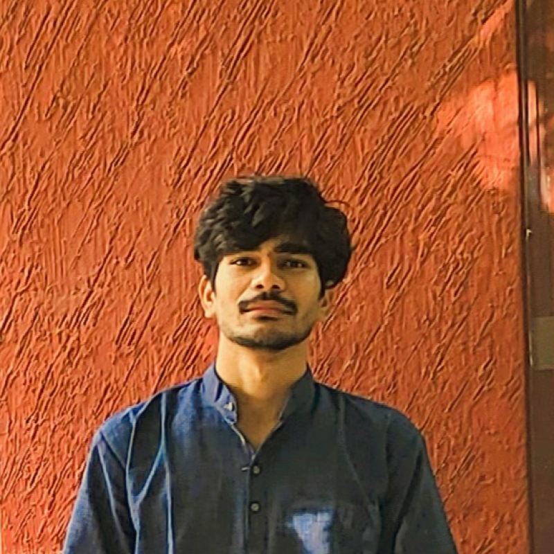

Research Intern at IIT Hyderabad building machine learning systems that connect theory with real-world data . (cliché)
Interested in representation learning, generative models, reinforcement learning, and active learning frameworks .
Let's talk about AI, research, or building meaningful systems. Better, can you teach me Graph Neural Networks?
